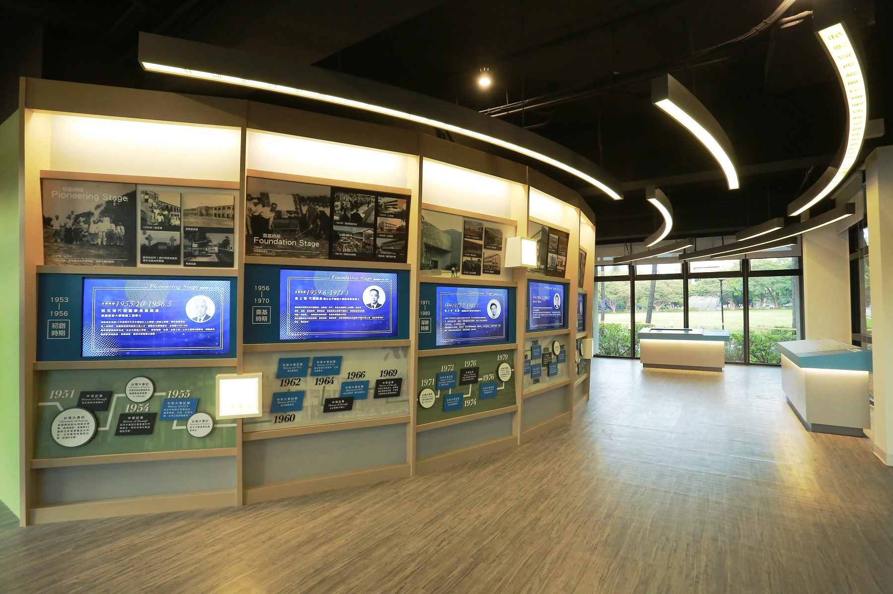

中原大學校史博物館
校史館緣由
中原大事紀
設計理念
展廳介紹
力行廳
篤信廳
影片介紹
關於我們
A / 迎賓介紹
走進全人校史館，校史館LOGO形象牆以多媒
體影像呈現中原的人、事、物，傳遞象徵恩
典、全人、時間、空間的中原故事。
中原大學校史館 詠頌
充滿上帝祝福 備載前賢足跡
展現全人典範 創締教育新猷
你我同享榮耀 淚水歡笑與共
願神永遠引領 昔在今在永在
B / 全人教育
重現中原第一棟建築物懷恩樓意象及特色地
標鐘塔的設計，在這裡會聽到陣陣鐘聲傳來
，整合科技、影像與設計，運用立體光雕投
影手法，展現中原全人教育理念的辦學特色
。
C / 中原大故事
以弧線造型的年表設計，及多媒體影像播放方
式，呈現中原創校及建校的歷程簡史。以時、
人、事、榮譽、中原大小事，以及當時臺灣及
中壢地區的時代背景，訴說發起人，創辦人，
歷任董事長及校長，從初創時期，奠基時期，
深耕時期，成長時期，苗壯時期，擴張時期，
拓展時期，到新象時期等八大時期之中原故事。

D / 來到校園
透過「中原文物及老照片」、「國際姊妹校」、 「擴大中的大學」、「名人堂」、「特色活動」 等主題規劃，展示創校過程相關深具意義之物件 ，中原各種活動或角落的影像紀錄，以及中原從 創校時的400坪校地，擴大成現在35公頃校園的 變遷過程。